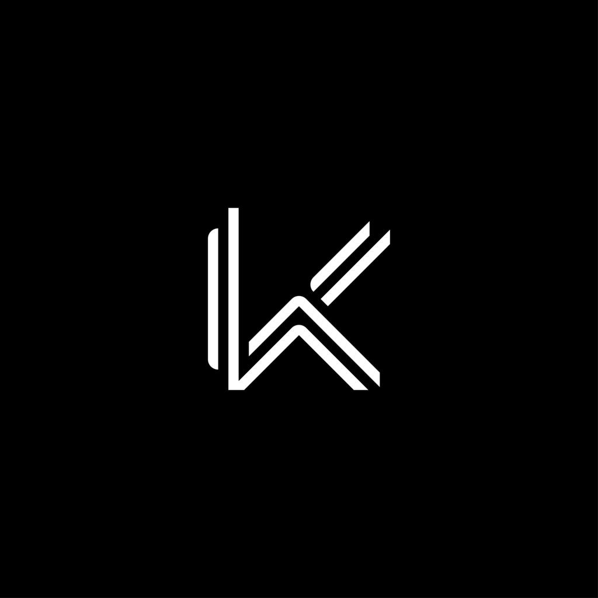

Round técnico e condicionamento para 45 min
Boxe e MMA. Intensidade alta. Técnica, explosão e volume controlado.
Manopla 6×3 min
Sprawl explosivo 5×12
Shadow com deslocamento 4×2 min

KYRONTreino com IA para atletas de artes marciais que treinam na vida real
O Kyron combina plano personalizado, execução guiada, chat esportivo, score de consistência e ranking para transformar rotina em evolução real, com foco especial em boxe, MMA e outras rotinas de combate com estrutura variável.
Boxe e MMA. Intensidade alta. Técnica, explosão e volume controlado.
Bom ritmo. A consistência está começando a pesar a seu favor.
“Se o round perder explosão, reduza o volume e preserve a técnica.”
Produto
O Kyron não tenta ser só mais um catálogo de exercícios. A proposta é unir personalização com disciplina operacional: o app entende seu contexto, gera a sessão, acompanha a execução e devolve sinais de progresso. Isso é especialmente valioso em esportes que costumam treinar fora da lógica da academia completa, como boxe, MMA e outras rotinas de combate com infraestrutura variável.
O resultado é um produto mais próximo de um coach digital de performance do que de um app estático de academia.
Como funciona
O app entende disciplina, ambiente, nível, frequência e duração da sessão, adaptando o treino para dojo, CT, espaço funcional, treino em casa ou rotina com poucos recursos.
A IA monta um treino coerente com sua realidade, com foco em técnica, explosão, condicionamento e ordem de execução.
Score, histórico, streak e ranking transformam repetição em progresso percebido.
Diferenciais
O treino nasce do seu ambiente, nível e tempo disponível, em vez de um template genérico. Funciona bem tanto para academia quanto para modalidades de combate que treinam com menos equipamento, como boxe e MMA.
Séries, descanso e progressão aparecem com clareza para você treinar sem pensar na interface.
Um assistente focado em treino, recuperação e performance de combate, com tom direto e contextual.
XP, score e ranking servem para reforçar consistência, não para poluir a experiência.
O produto já nasce com onboarding, geração de treino, ranking, avatar, notificações e testes.
A lógica do produto aponta para um loop claro: treinar, registrar, evoluir e voltar amanhã.
Sugestões
Se você treina boxe, MMA ou vive rotina de combate na prática, sua sugestão vale muito mais do que opinião genérica. Feedback de atleta ajuda a deixar o produto mais útil no mundo real.
Pode enviar proposta de funcionalidade, melhoria de treino, ajuste de usabilidade ou qualquer ponto que deixaria o Kyron mais forte para artes marciais.
Próximo passo
A landing já posiciona o produto para waitlist, TestFlight, apresentação para parceiros ou validação com usuários reais.